Content
- Motivation
- Our approach
- IgRepertoireConstructor
- Mass Spectra Analyzer
- DSF (Dense Subgraph Finder)
- Manual and citations
Motivation
Construction of antibody repertoire is a very preliminary step of any immunological analysis based on sequencing reads. Accurate construction of antibody repertoire avoids erroneous analysis of natural variations and antibody abundances.
Modern sequencing technologies (e.g., Illumina MiSeq) allow biologists to perform full-length scanning of antibody repertoire. For example, overlapping paired-end Illumina MiSeq reads cover variable regions of antibody:
| 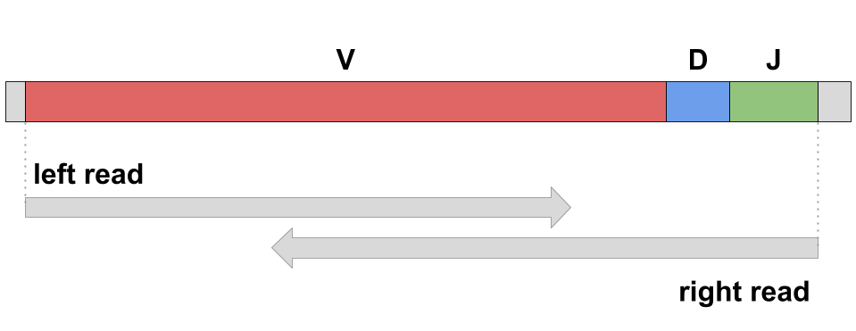 |
Problem of construction of antibody repertoire can be formulated as following:
| 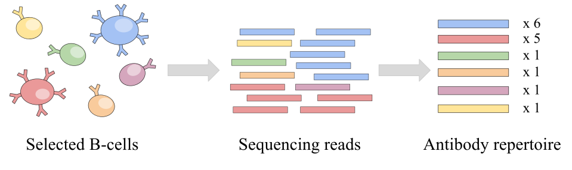 |
Antibody repertoire construction tool takes as an input sequencing reads (result of RNA-sequencing of some B-cells) and constructs antibody repertoire as a set of antibody clusters. Each antibody cluster represent a group of identical antibodies and is characterized by its sequence and abundance.
Our approach
IgRepertoireConstructor constructs antibody repertoire from immunosequencing reads and uses mass spectra to validate the constructed antibody repertoires. The whole pipeline includes two parts:
- IgRepertoireConstructor performs construction of antibody repertoire from immunosequencing reads: it corrects sequencing and amplification errors and joins together reads corresponding to identical antibodies. Constructed repertoire can be used as a highly accurate input for various immunological applications, e.g., construction of clonal trees, V(D)J labeling / CDR3 classification, mass spectra identification etc. Details of IgRepertoireConstructor algorithm can be found below.
- Mass Spectra Analyzer is a tool for immunoproteogenomics analysis. Repertoire constructed by IgRepertoireConstructor can be converted into a database and used for mass spectra identifications (using some standard tool, e.g., MS-GF+). Mass Spectra Analyzer performs analysis of the computed matches and computes various statistics showing similarity of the constructed repertoire and mass spectra. Mass Spectra Analyzer details are described below.
 |
| Pipeline of antibody repertoire analysis. |
IgRepertoireConstructor
IgRepertoireConstructor takes as an input reads (paired-end or single) covering variable region of antibodies and corrects sequencing and amplification errors.
Algorithm performs the following steps:- VJ Finder: V, J labeling and cleaning input reads.
- Construction & clusterization of SW graph: representation of cleaned reads as a Smith-Waterman graph and finding of groups of highly similar antibodies.
- Antibody construction: reconstruction of antibody sequences from the constructed groups, cleaning amplification errors.
VJ Finder
The main goals of VJ Finder tool are:
- Finding and discarding contaminated reads.
- Cropping remaining immunosequencing reads by the start position of the closest V gene segment and the end position of the closest J gene segment. VJ Finder also discards reads covering V gene segment only since they can not be unambiguously assigned to antibody cluster.
VJ Finder outputs information about the closest V and J gene segments in tab-separated view:
| Read id | V start | V end | V score (% identity) | V id | J start | J end | J score (% identity) | J id |
| read1 | 1 | 296 | 100.0 | IGHV3-20*01 | 321 | 366 | 89.0 | IGHJ5*02 |
| read2 | 1 | 294 | 98.64 | IGHV3-9*01 | 309 | 354 | 100.0 | IGHJ2*01 |
| ... | ... | ... | ... | ... | ... | ... | ... | ... |
Construction and clusterizarion of Smith-Waterman graph
We use Smith-Waterman graph to show similarity between reads. Idea of Smith-Waterman graph is close to Hamming graph: vertices represent reads remaining after VJ Finder, edge connects read1 and read2 if global edit distance between these them is relatively small. After construction of graph, we use clustering techniques allowing us to find dense structures (corrupted cliques) from the graph (see figure below). These dense structures present groups of highly similar antibodies. Algorithm for search of corrupted cliques is also implemented as a separate tool and is described in Dense Subgraph Finder section.
| 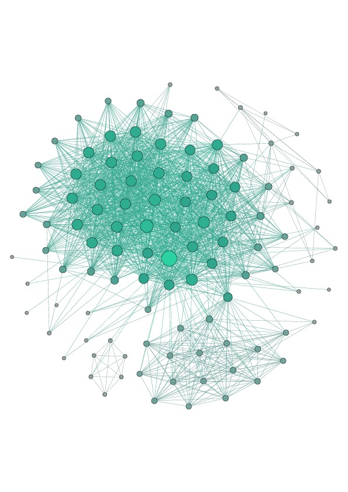 | 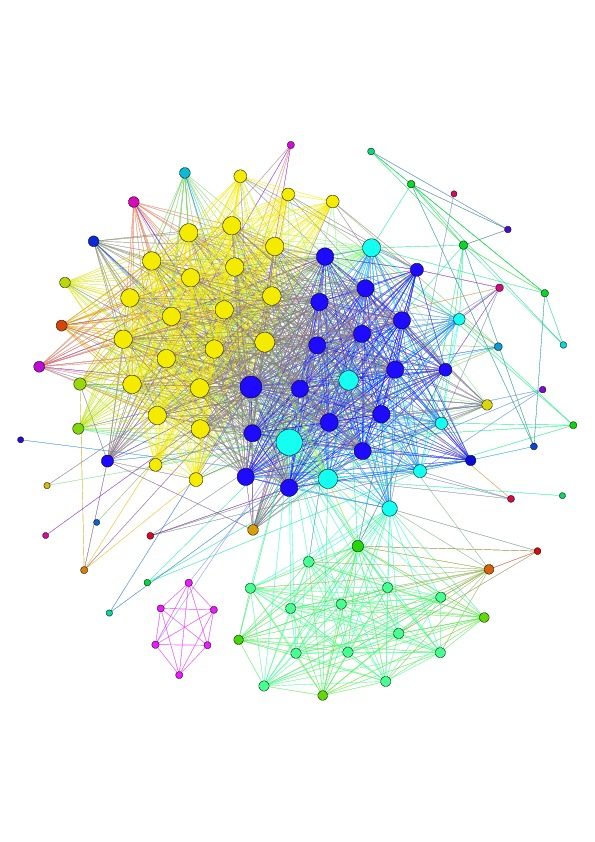 |
| Example of connected component of Hamming graph constructed from immunosequencing reads (human, heavy chain repertoire of IgM). | Clusterization of Hamming graph performed by IgRepertoireConstructor. Each color corresponds to single antibody cluster. |
Mass Spectra Analyzer
This step performs immunoproteogenomics analysis to validate constructed repertoire using mass spectra. It takes alignment of mass spectra against constructed repertoire in mzIdentML 1.1 format (e.g., generated by MS-GF+) as an input and outputs a set of metrics and graphs that show how close are the constructed repertoire and provided mass spectra:
| 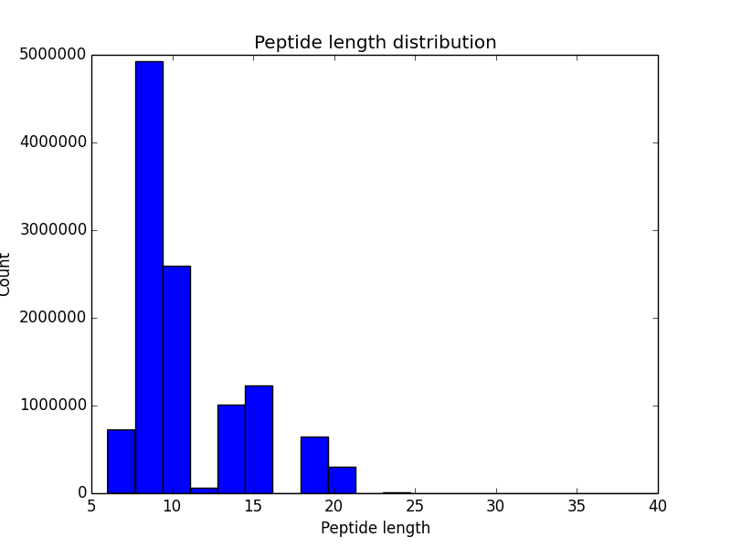 | 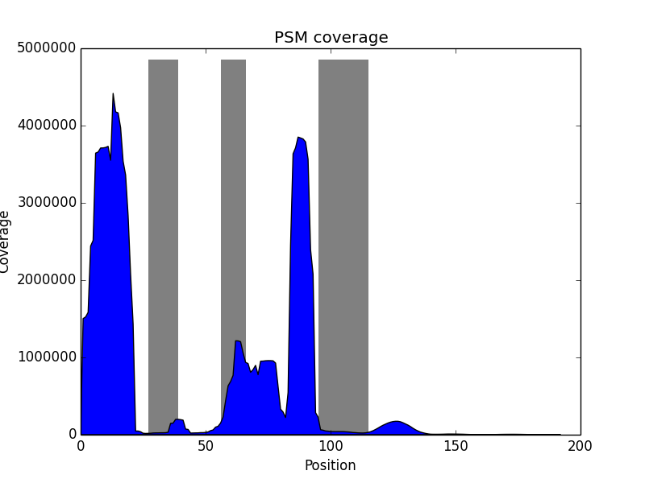 |
| Histogram of peptide length distribution. | Histogram of variable region coverage by PSMs. Grey bars corresponds to expected positions of CDRs. |
DSF (Dense Subgraph Finder)
Search for dense subgraphs (or corrupted cliques) is a very common problem arising in bioinformatics
(e.g., co-expression of genes) and studies of social interactions (e.g., recommendation services).
We decided to make an algorithm for dense subgraph search available as an independent tool.
One can download IgRepertoireConstructor archive and run DSF for search of dense subgraphs.
DSF takes as an input indirected graph in
GRAPH format and outputs
decomposition where the identical ids were assigned for vertices from the same dense subgraph.
Density of constructed subgraph can be tuned via parameter -f (minimum edge fill-in in dense subgraphs).
Table below shows how dense subgraph decomposition varies depending of minimal edge fill-in value.
|
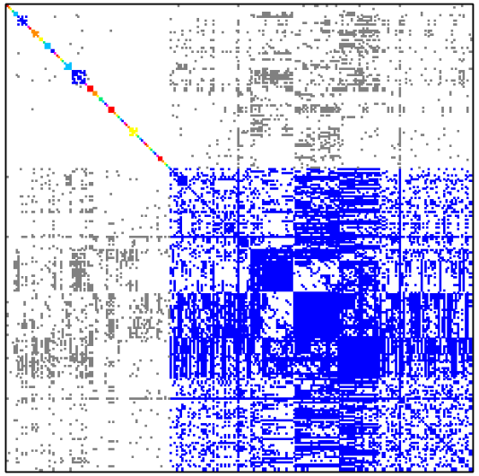
|
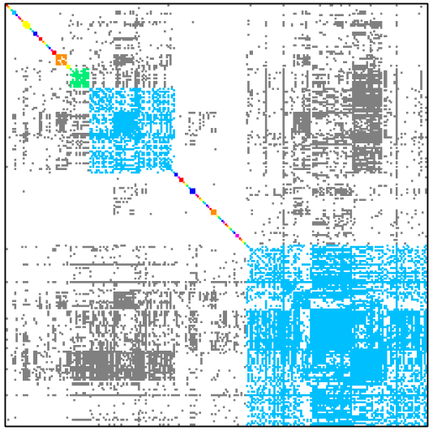
|
| Minimal edge fill-in = 0.3 | Minimal edge fill-in = 0.4 |
| # dense subgraphs = 55 # trivial subgraphs = 40 size of maximal subgraph = 157 | # dense subgraphs = 61 # trivial subgraphs = 46 size of maximal subgraph = 104 |
| 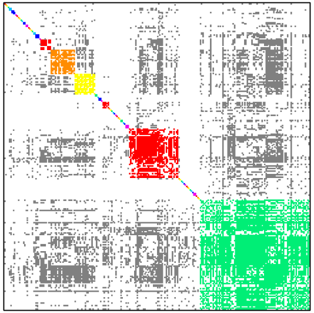 | 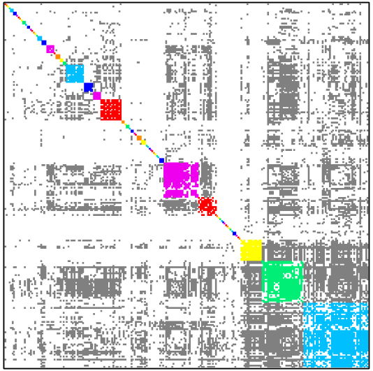 |
| Minimal edge fill-in = 0.5 | Minimal edge fill-in = 0.7 |
| # dense subgraphs = 60 # trivial subgraphs = 43 size of maximal subgraph = 87 | # dense subgraphs = 68 # trivial subgraphs = 42 size of maximal subgraph = 43 |
Here is an example of DSF work for finding recommendations. Graph polbooks shows books about USA politics that were bought by the same customer on Amazon. Dense subgraphs in such graph present books that can be recommended together.
|
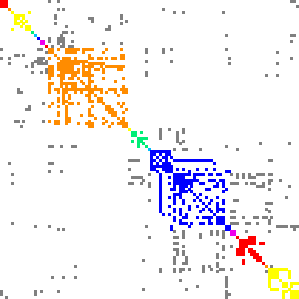
|
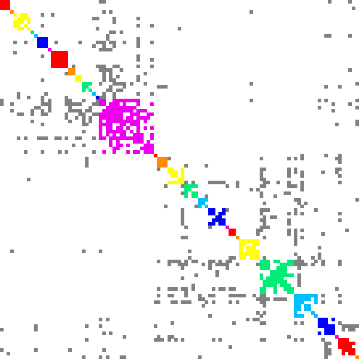
|
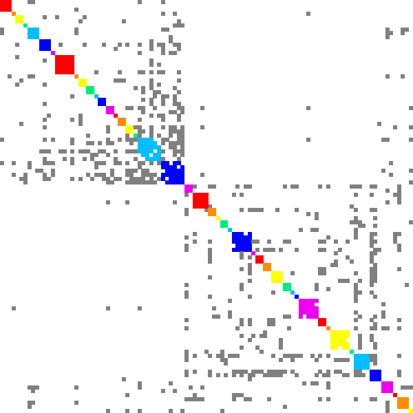
|
| Minimal edge fill-in = 0.2 | Minimal edge fill-in = 0.5 | Minimal edge fill-in = 0.7 |
| # dense subgraphs = 17 # trivial subgraphs = 8 size of maximal subgraph = 28 | # dense subgraphs = 30 # trivial subgraphs = 11 size of maximal subgraph = 16 | # dense subgraphs = 45 # trivial subgraphs = 16 size of maximal subgraph = 6 |
Manual and citations
Citation: Yana Safonova, Stefano Bonissone, Eugene Kurpilyansky, Ekaterina Starostina, Alla Lapidus, Jeremy Stinson, Laura DePalatis, Wendy Sandoval, Jennie Lill and Pavel A. Pevzner. IgRepertoireConstructor: a novel algorithm for antibody repertoire construction and immunoproteogenomics analysis. Bioinformatics. 2015 Jun 15; 31(12): i53-i61. doi: 10.1093/bioinformatics/btv238.